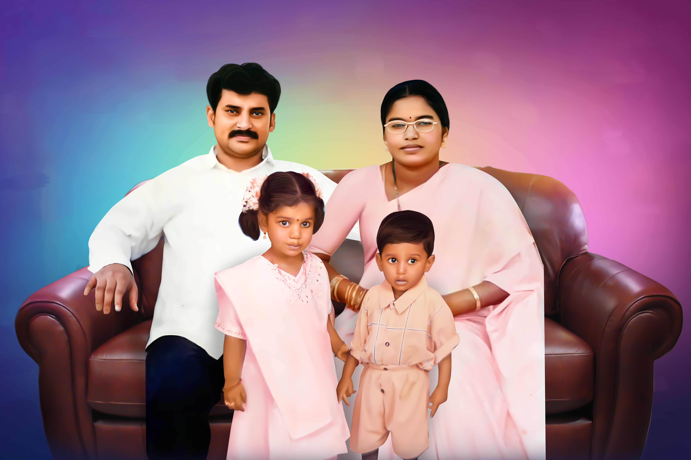
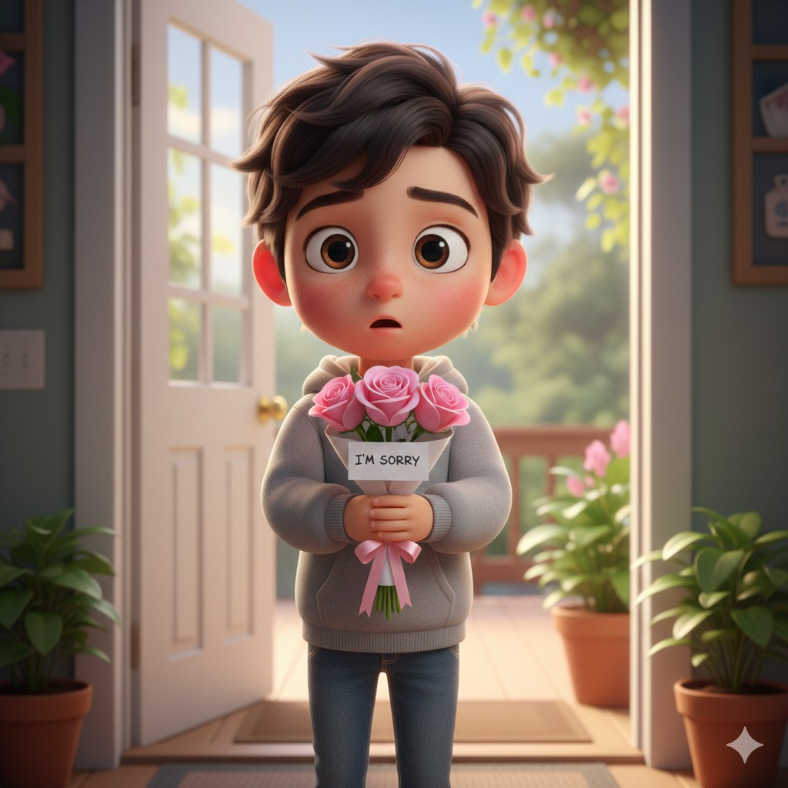
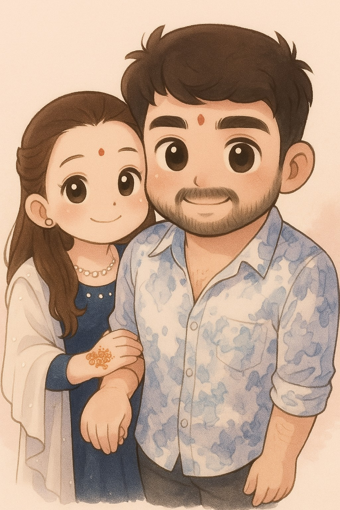
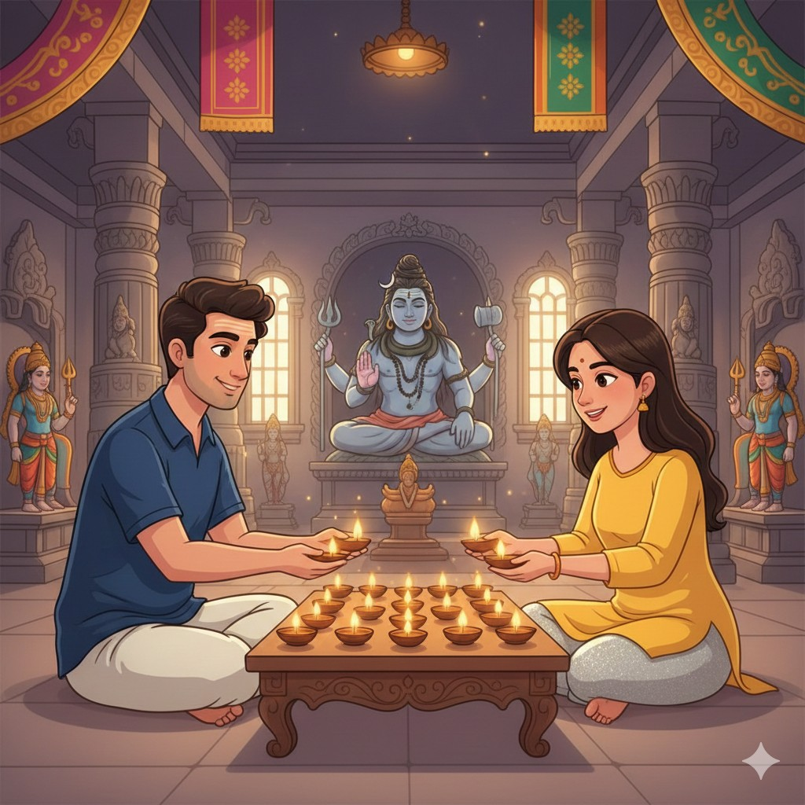
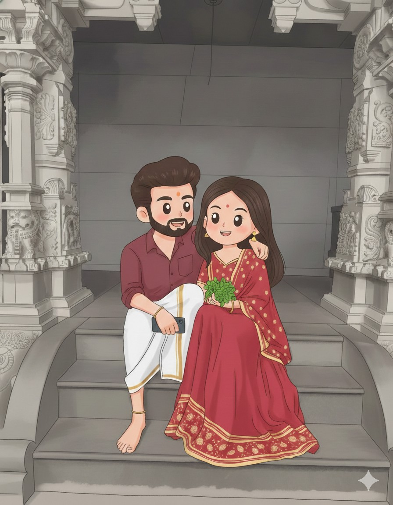

Naalugo bhaagam, Trust. Choosthu choosthundagane kalisina samvastaram ki 2 years ipoyay. Time anedi express train kaadu okati metro train la velthundi, enduko antha thondara kaalam ki. evarini vetaaduthundi mana emotions na or mana thoughts na. rep em jaruguthadi ani aaalochinchelope repu vachesthundi. Parichayam, dwesham, prema tarvatha vachina part e story lo Trust. How much you can trust on each other and how much you have trust on your Love. Idi manaki telsi prathee okkari life lo vacchee phase and prathee okkaru face cheyalsina phase. Nivas and Manasa turn kuda vachindi e phase lo. Iddaru love start ayyi continue avthunna time lo nivas bday vachindi. Asusual manasa kotthaga emaina plan cheddam ani nivas ki valla family photo different photos vi okala chepinchi ichindi because he said valla chinnapati naluguru kalisi unna okka photo ledu ani. And nivas tho paatu valla family motham andaritho kalisi celebratr chesar and that's toooo memorable for her.
Padava prayanam kanna chikkulu ga undi prema prayanam. Love life alaaa saaguthuu undan ga, It has got some various divertions. Manasa Nivas ki teliyakunda thana frnd oka abbayi tho chat chesindi cheppakunda, oka roju manasa maha Shivaratri roju fasting untunapdu anukokunda nivas aaa vishayam choosaadu chaalaaa kopam vachindi thanaki. Chalaa godava ayindi vallindariki discussions alaa jaruguthu undevi. Iddaru long distance lo unnar, e godava ayindi. Enthoo premaga nivas manasa kosam saree avanni teesukochad kaani aa aaananadam kshana kaalam maatrame undi and aa gifts antha aaanandam tho manasa ki ivvalekapoyaadu. Apdu manasa ki chaalaaa guilt vachindi and thanu direct ga velli sorry cheppaleka oka chinna bouquet pampinchindi. Manam preminchina vallla meeda entha kopam unnaa, oka sari vaalla efforts choosthe prema aaa kopanni dominate chesthadi ala nivas got some cool.
After this Raane vachindi, Manasa birthday vachidni. Adhee time lo papam nivas ammamma ki baaleka hospitalize ayyaar. Night thanatho kalisi celebrate chesukolekapoina, mrng iddaru kalisi gudiki vellaar that's the sweetest moment for a girl, preminchina abbayi tho gudiki velladam.
But, hard time never leaves a person anattu vallatho paatu evening party ki vachina oka pair kaaranam valla dishti thagilo or emo, vallaki aa night car lo pedda godava jarigindi manasa bday roju that's heartbreaking one. Chinnapati nundi aanavaayithi anukunte edoka reason valla bday roju edavali annadi. After that valla madya lo godavalu common ipoyay, they started the real lover's phase anochuuu. One fine day manasa nivas phone thanaki teliyakunda choosindi. Aa choosina vaati gurinchi direct ga aa time lo adagaledu, endukante bayam baadha thana kallalo choosthu godava padaledu pirikidi. tarvatha muhoortham choosukuni adiginattu thanani kalisi nivas intiki vellaaka adigindi. Deeni gurnchi kuda valla madya discussion jarigindi... Em cheyali, vadili vellaala or ardam chesukuni undala. Vadili vellemtha easy kaadu prema anedi, enni vacchina try cheddam anattu start ayindi. Nivas apdu promise chesad thanaki, alantivi malli jaragavu ani. Choosthu choosthundaga shivaratri velli kaartheeka maasam vachidhi. Modati somavaram kalisi jarupukovali ani manasa manasulo unaa nivas meeda kopam, ina sare thanu kalavadaniki vacchaad iddaru kalisi valla modati deeepam ni modati kaartheeka maasam saayamtram vela veliginchaaru.
Godavalu untay, misunderstandings untay ennii unnaa, elaa unna malli kalisipoyee mentality iddaridi. Apart from godavalu, they are like open spontaneous to each other and they enjoy each other company, kalisi movies, temples, works whatever they share everything and they share every hustle. Oka partner lo intha kanna kavalsindi undadhu. Kalisi vibe avvalekapothunam ante, we are truly in a wrong place. But they never bore each other.
Nivas manasa kosam chalaa chesadu, chaalaa efforts pettaadu, thana love paiki andaru choopinche actions kanna lopala hidden ga untundi. Manasa kuda nivas kosam chala efforts peduthundi, thana love ni express chesthu untundi in different forms. Nivas is like a Lava and Manasa is like an Ocean. That's their personalities. Entha godava vachina, entha thittukuna at last iddaru kalisi undatam kavali, ardam chesukune understanding undali that's the true love phase starting lo ela unnaa, vellee koddi the path becomes more difficult. Pelli chesukuni haayi ga undali ani iddariki undi, but to achieve that they need to cross moreeee hurdles which they started that in 2025. 2024 daakaa aall chill and good. But the butterflies phase has gone and the real relationship phase has started. Hope they achieve each and every phase and we will continue our story to another level.